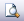
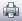
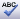

Toolbars Icons |
The icons located throughout NBS Contract Administrator are designed as quick and easy shortcuts, allowing the users to easily edit and update thier active job.
| Used to start the new job creation process. A new job will be created and opened in the editor. |
 |
Used to open a print preview of the selected form. This will open a new window and allow the user to view the printable output of the form as well as options for exporting. |
| Used to issue the selected form in the active job. | |
| Used to recall the last single issued form in the active job. | |
|
 |
Used to print the selected form in the active job. |
| Used to remove the selected form from the active job. Please Note: This option is only available for forms with Draft status. |
| Used to add a new item in the active Instruction in the form editor. | |
| Used to save the selected form in the active job. | |
| Used to save and close the selected form in the active job. | |
| Used to print the selected form of the active job. | |
| Used to print preview the selected form of the active job. | |
| Used to issue the selected form of the active job. | |
| Used to recall the last single issued form in the active job. | |
|
 |
Used to spell check the editable regions of the selected form in the active job. |
| Used to remove an item from the active Instruction in the form editor. | |
| Used to cut text in the selected form of the active job. | |
| Used to copy text in the selected form of the active job. | |
| Used to paste text in the selected form of the active job. | |
| Used to make the selected text bold in the form of the active job. | |
| Used to make the selected text italic in the form of the active job. | |
| Used to Underline the selected text in the form of the active job. |
| The previous icon will allow the user to scroll back through the pages of any guidance they have visited. | |
| The forward icon will allow the user to scroll forward through the pages of any guidance they have visited. | |
 |
Select the home icon to return to the guidance homepage. |
| The search icon allows the user to search or browse the guidance. | |
| The synchronise icon will synchronise the guidance with the users current active contract administration form. |
See Also:
Terminology